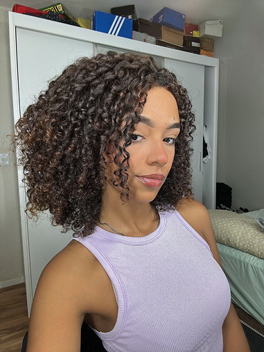
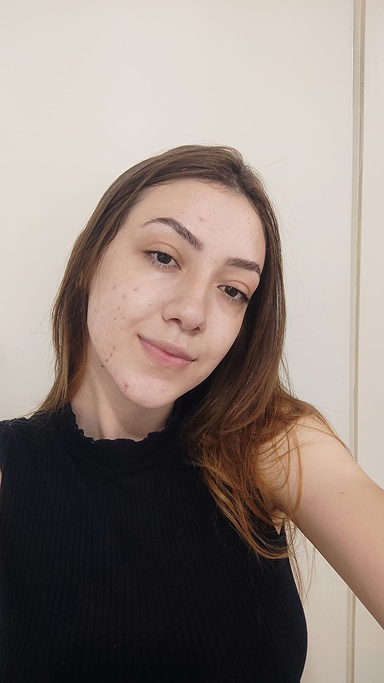

Sobre Nós
A NutriMatri é uma plataforma digital que apoia gestantes e mães no pós-parto, conectando-as a profissionais de saúde, conteúdos e serviços parceiros. Seu foco é promover saúde, bem-estar e acolhimento, tornando a maternidade mais acessível e humanizada.
Missão
Promover saúde e acolhimento por meio do acesso
à nutrição, atendimento psicológico e informação de qualidade.
Visão
Ser a principal plataforma brasileira de apoio
e saúde para mães e gestantes.
Valores
Inclusão
Empatia
Humanização
Transparência
Inovação Social
Saúde Preventiva
Nossa Equipe
Amani Vital
PO / DEVVitor Lima
SM / UI-UX / DEV
Ana Julia Ribeiro
DEV